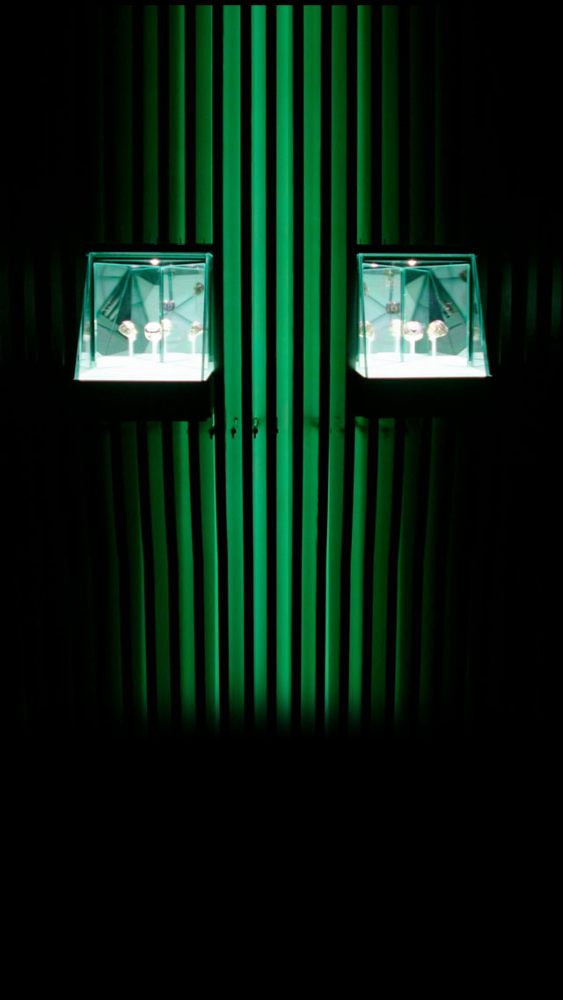
RING ROOM
Built in the shape of the Oregon "O" and fitted with 3D sound, our ring room is home to our Bowl and Championship rings.
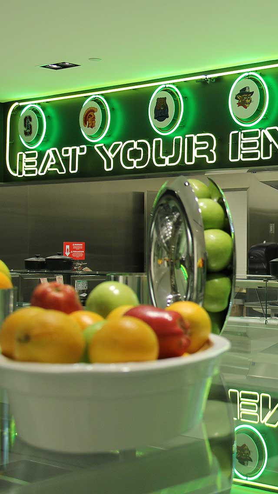
CAFETERIA
With family style seating for 200+, a full salad bar, and a to-go refrigerator, our cafeteria was designed to accommodate players' dietary needs and busy schedules.
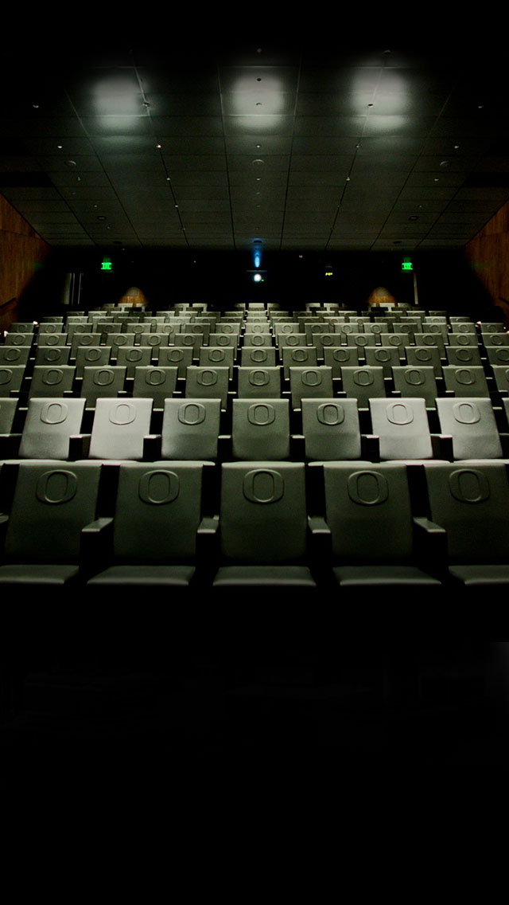
THEATER
Our theater seats up to 170 players and personnel, and features Ferrari leather upholstered and climate controlled seats for the ultimate game tape viewing experience.
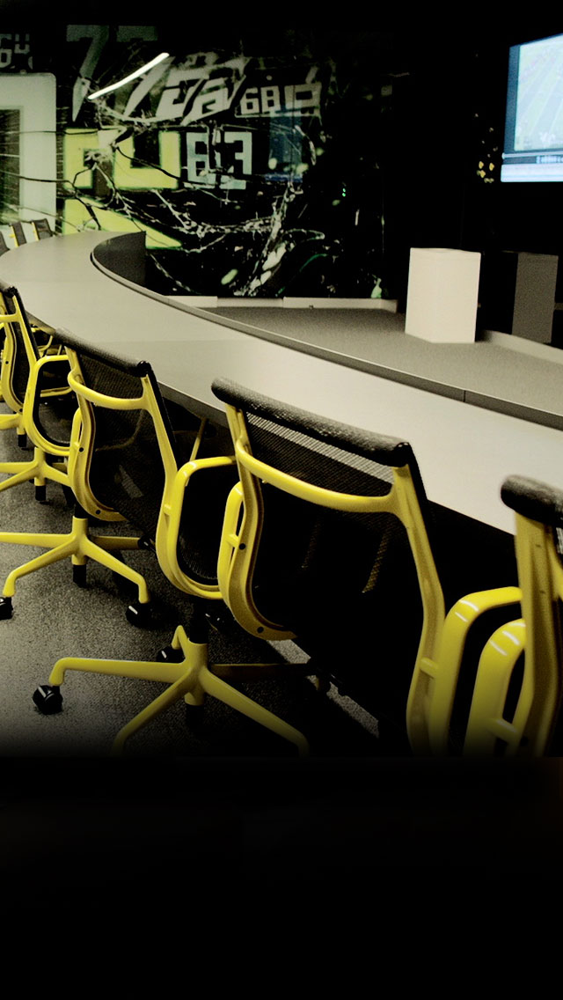
PLAYER MEETING ROOMS
Featuring a 90" TV screen, Axion Cognitive Development monitors and magnetic writable surfaces, our player meeting rooms set-up our success on both sides of the ball.
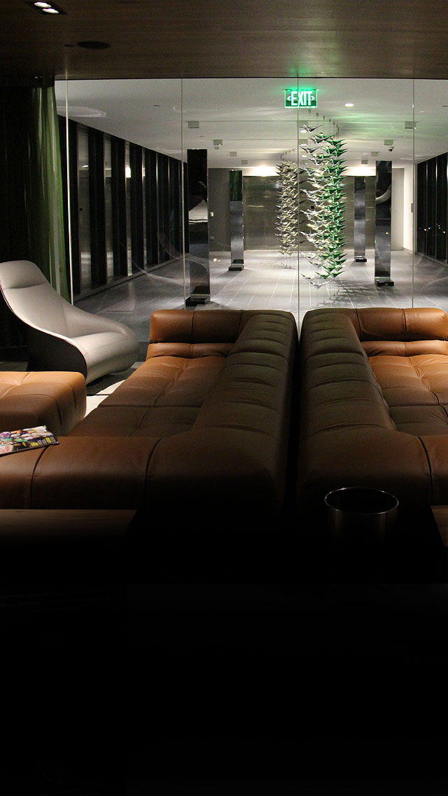
Family Lounge
Our family lounge is designed to be a space where visiting families can relax comfortably. The lounge features floor-to-ceiling laser engraved walnut paneling, leather couches, two 55” TVs and hand-woven Nepalese rugs.
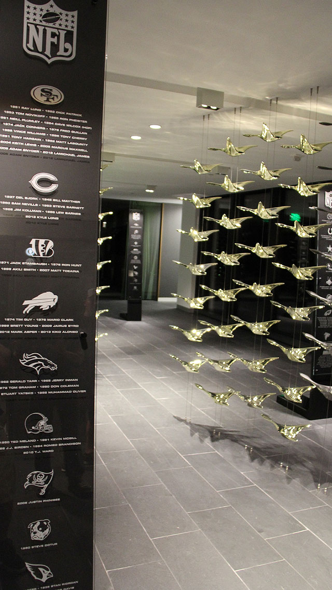
Skybridge
Our Skybridge installation features a formation of flying ducks, each of which represents a former player drafted into the NFL.
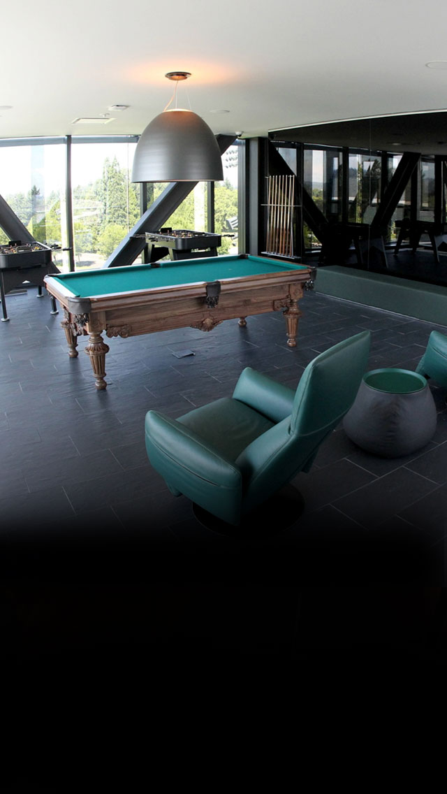
PLAYER LOUNGE
With four 55" TVs, two gaming walls and custom pool and foosball tables—the player lounge is a great place to take a break and hangout with teammates.
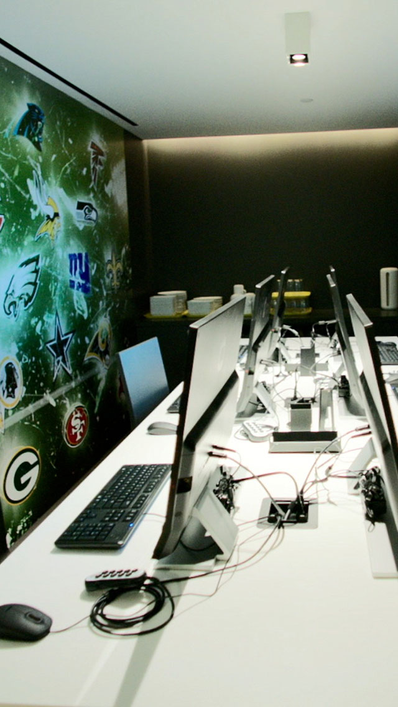
SCOUT ROOM
Our scout room provides pro scouts a dedicated space with access to practice and game footage.
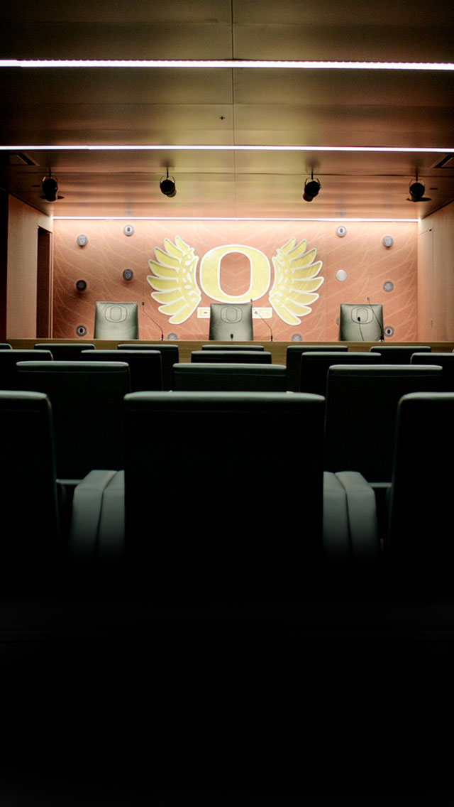
MEDIA ROOM
Designed to capture high quality media footage during postgame and press conferences, our media room features Nike Football leather-wrapped walls and a player area for conducting one-on-one interviews.
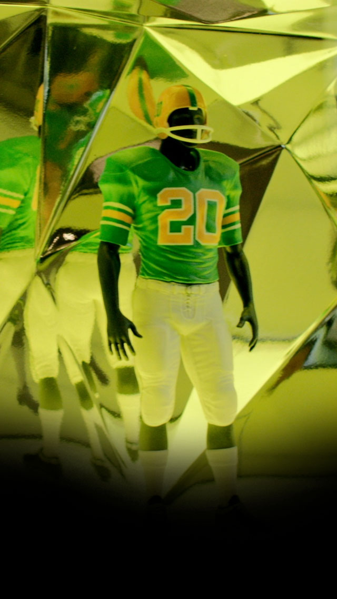
MAQUETTES
Our History of Oregon Football Uniforms exhibit displays miniature statuettes outfitted in game gear dating from 1894 to present.
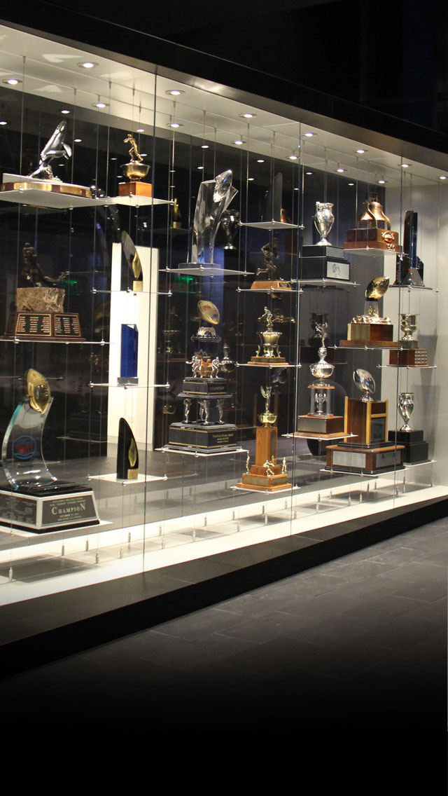
TROPHY CASE
From our first Rose Bowl victory in 1917 to our most recent BCS Bowl triumph in 2013, this is home to our most prestigious hardware.
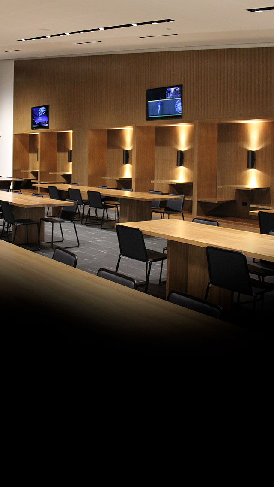
DINING ROOM
Our dining area contains seating for 200+ players and personnel, family-style walnut tables and booths, and a total of six 55” TVs.
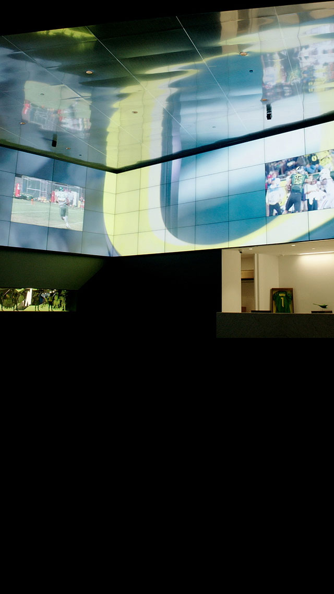
Lobby
Featuring 64 interconnected TV screens and 3D sound our lobby was built to inspire.
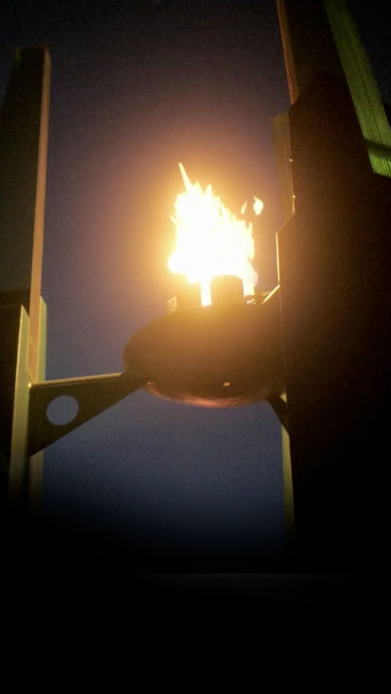
ETERNAL FLAME
The Eternal Flame represents University of Oregon athletes past, present and future.